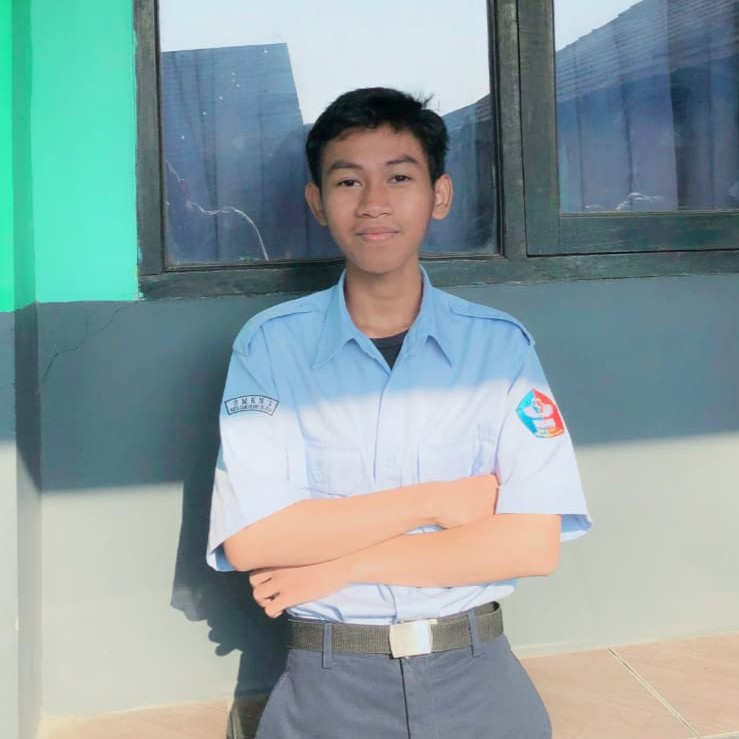

Open to learning & collaboration
Building a foundation in connected systems.
Informatics Engineering student exploring how software, electronics, and thoughtful problem solving come together in IoT and embedded systems.

YAI
01
01
01curious by design
01 /
A curious mind,
under construction.
I am an Informatics Engineering student at UIN Syarif Hidayatullah Jakarta, building my fundamentals across programming, electronics, and communication networks.
My practical experience has taught me to inspect carefully, document clearly, troubleshoot with structure, and work as part of a team. I am currently learning how those habits translate into reliable connected systems.
Aug 2025—presentInformatics Engineering · UIN Jakarta
Learning in publicAlways open to thoughtful feedback
02 /
Tools & working knowledge.
A growing toolkit, grounded in curiosity and practice.
Build & learn
How I work
03 /
Selected projects.
Early concepts with room to grow into documented builds.
IoT / 01
01Details to be documented
Smart Parking Management System Based on IoT and Microcontrollers
A project concept exploring connected parking management through IoT and microcontroller-based systems.
EMBEDDED / 02
02Details to be documented
Automatic Accident Detection System
A project concept focused on automatic accident detection using an embedded systems approach.
04 /
Experience that
shapes the work.
01
PRACTICAL EXPERIENCE
Technical engineering practical work
Contributed to elevator preventive maintenance, mechanical and electrical inspections, documentation, troubleshooting, and teamwork.
02
WORK EXPERIENCE
F&B staff
Built practical experience in communication, teamwork, and working with care in a fast-moving service environment.
03
ORGANIZATION / COMMITTEE
K3 committee member · PBAK UIN
Supported the K3 committee for PBAK UIN in 2026, contributing through coordination and responsibility.
05 /Education
Informatics Engineering
UIN Syarif Hidayatullah Jakarta · Aug 2025—present
Relevant courses Digital Systems · Networks & Communications · Advanced Programming · Linear Algebra · Basic Electronics
06 /
Let’s make something
meaningful.
Have a project, opportunity, or conversation in mind? I would be glad to connect.
AVAILABLE FOR A CONVERSATION
Start with a simple hello.
yafiichsan05@gmail.com ↗I usually reply by email. You can also find my direct contact details below.